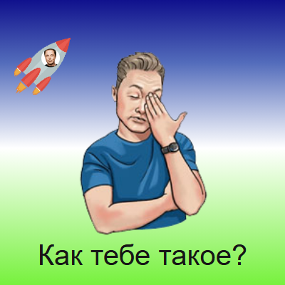
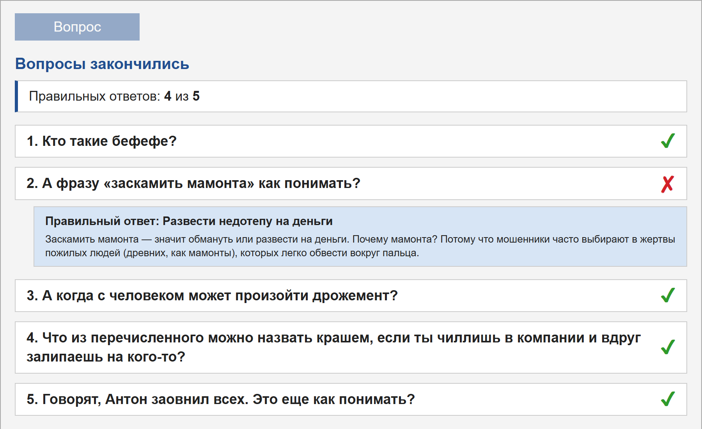

Лабораторные работы

Здесь собраны лабораторные работы по верстке. У каждой работы есть отдельная страница, на которой можно посмотреть саму работу в живом виде, прочитать задание и описание того, как она выполнялась.
Все страницы работ устроены одинаково. Сверху находится сама работа, которую можно сразу попробовать, ниже идет задание и подробное описание со скриншотами, а в конце написан вывод. Внизу страницы есть ссылки для перехода к предыдущей и следующей работе. Так в любой работе легко найти нужную часть.
Ниже у каждой работы есть краткое описание: что она собой представляет, какие свойства и методы в ней использовались и что оказалось самым сложным. Чтобы перейти к работе, нажмите на ее название или на ссылку «Открыть работу». Работы идут по порядку номеров, поэтому их удобно смотреть одну за другой.
2. Рисунок CSS
Вариант 3. На рисунке небо с облаком, два гриба, пчела и трава. Каждая деталь - это обычный блок, который поставлен на свое место через абсолютное позиционирование. Готовые изображения не использовались.
Что использовалось: position, z-index, border-radius, transform, псевдоэлементы, градиенты и clip-path.
Самым сложным оказалось подобрать форму крыльев пчелы и зубцы травы. Значения пришлось много раз менять и смотреть, что получается.
3. Flexbox-ролик

Вариант 4. Небольшой ролик без единой строчки JavaScript. В обычном состоянии персонажи покачиваются, при наведении появляются другая картинка и надпись, а при нажатии кадр меняется еще раз. Если навести мышь на ракету, она летит по спирали.
Что использовалось: display: flex, псевдоклассы :hover и :active, @keyframes, offset-path и writing-mode.
В этой работе стало понятно, как удобно центрировать элементы через Flexbox и как много можно сделать одними только стилями.
6. DOM-тест «Слэнг»

Вариант 1. Тест из пяти вопросов про современный слэнг. В HTML-файле лежит только заготовка, а вопросы и ответы создаются скриптом. Порядок вопросов и ответов каждый раз случайный. В конце показывается статистика, а по нажатию на вопрос можно посмотреть правильный ответ.
Что использовалось: createElement, addEventListener, classList, setTimeout и CSS-переходы.
Главная сложность была в том, чтобы блоки уезжали строго по очереди, а следующий вопрос открывался только после окончания анимации.